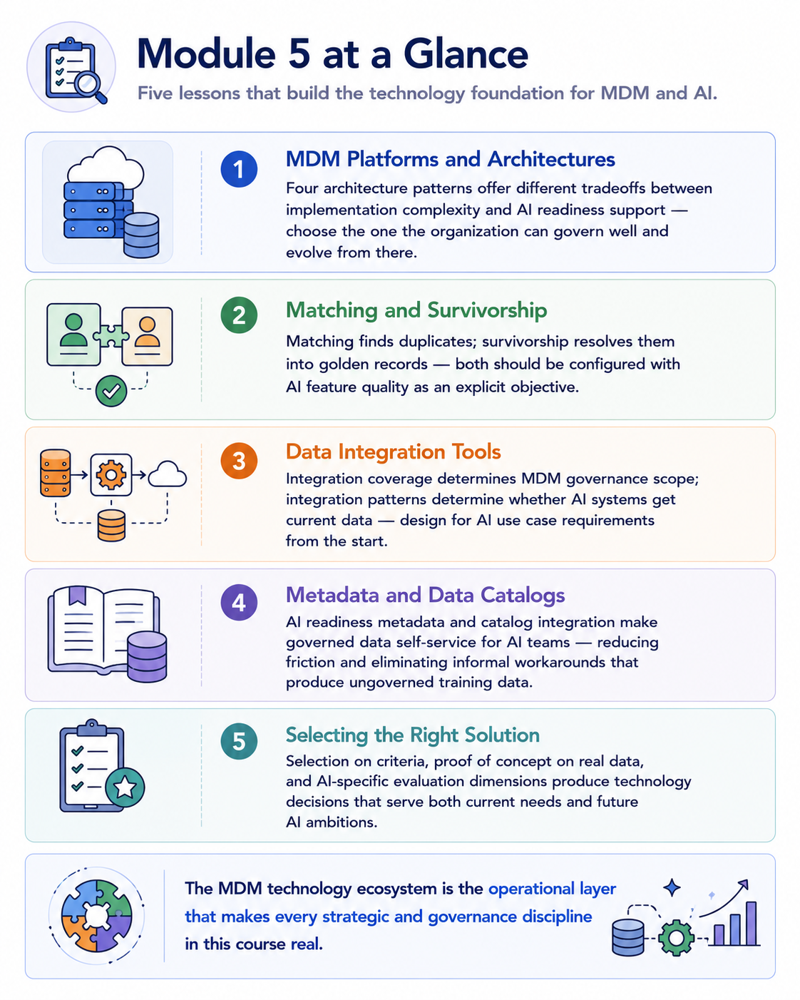
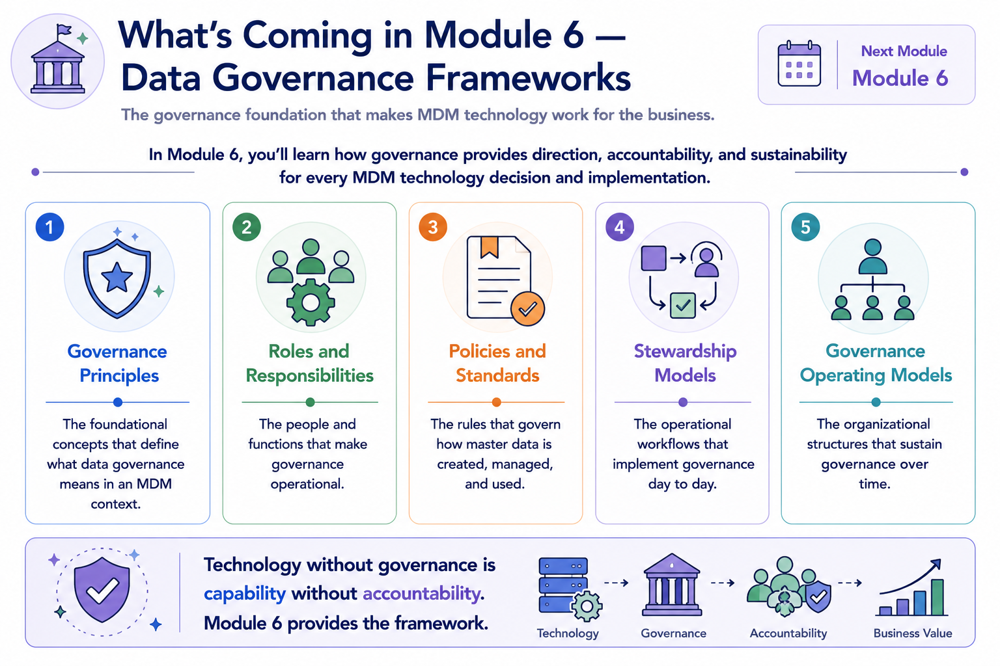
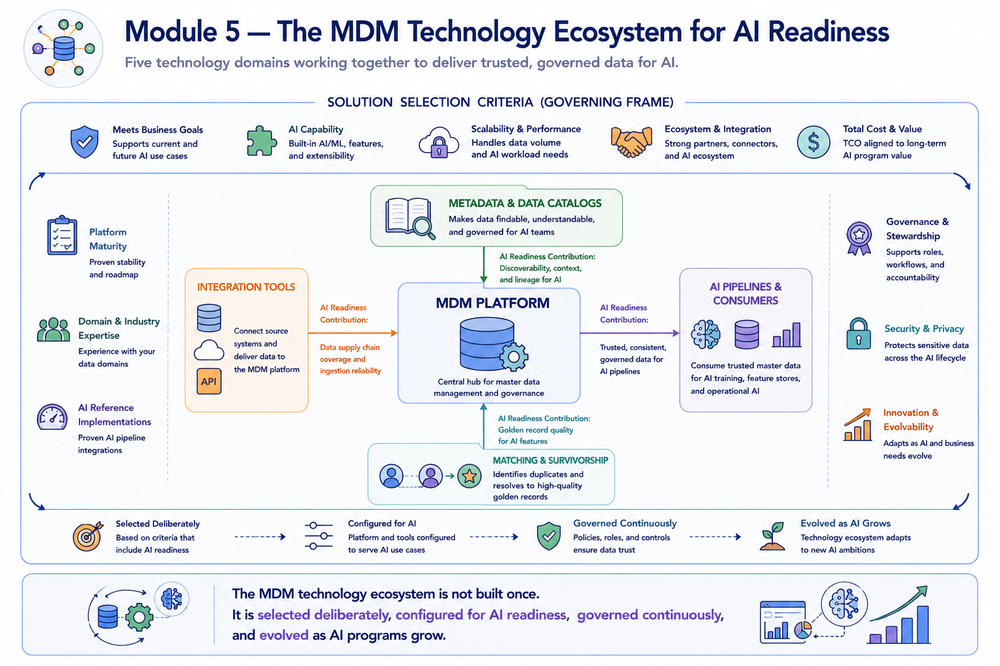

Module Recap
Module support notes
What This Module Covered
The central argument of this module is that MDM technology selection and configuration decisions have direct and specific consequences for AI outcomes — and that organizations which treat technology as a neutral implementation detail, separate from AI strategy, consistently make technology choices that constrain their AI programs.
Every technology decision covered in this module has an AI dimension: architecture affects AI pipeline architecture; matching and survivorship configuration affects AI feature quality; integration patterns affect AI data latency; metadata and catalog design affects AI team productivity and governance auditability; and solution selection criteria that omit AI readiness requirements produce platforms that create technical debt for the AI program from day one.
- MDM Platforms and Architectures — four architecture patterns offer different tradeoffs between implementation complexity and AI readiness support; choose the one the organization can govern well and evolve from there
- Matching and Survivorship — matching finds duplicates; survivorship resolves them into golden records; both should be configured with AI feature quality as an explicit objective
- Data Integration Tools — integration coverage determines MDM governance scope; integration patterns determine whether AI systems get current data; design for AI use case requirements from the start
- Metadata and Data Catalogs — AI readiness metadata and catalog integration make governed data self-service for AI teams, reducing friction and eliminating informal workarounds that produce ungoverned training data
- Selecting the Right Solution — selection on criteria, proof of concept on real data, and AI-specific evaluation dimensions produce technology decisions that serve both current needs and future AI ambitions

The AI Technology Thread Through Module 5
The AI readiness thread through Module 5 is more specific than it was in Module 3. Where Module 3 established AI readiness as a strategic goal, Module 5 establishes the specific technology decisions that determine whether that goal is achievable.
The architecture pattern determines the reliability of the AI data supply chain. The matching and survivorship configuration determines the quality of the features AI models learn from. The integration pattern determines the currency of data in AI inference systems. The metadata and catalog design determines whether AI governance is manual and fragile or automated and scalable. And the solution selection criteria determine whether the MDM platform will remain a capable AI data partner as the organization's AI program grows.
Note
Every layer of the MDM technology stack contributes to — or detracts from — the organization's AI readiness: MDM Platforms determine AI pipeline architecture; Matching and Survivorship determines golden record quality for AI features; Integration Tools determine AI data supply chain reliability; Metadata and Catalogs determine AI data discoverability and governance auditability; Solution Selection determines the AI capability ceiling of the chosen platform.
![A technology stack diagram with five layers corresponding to the module's five topics. Each layer is labeled with its AI readiness contribution: MDM Platforms — AI pipeline architecture; Matching and Survivorship — golden record quality for AI features; Integration Tools — AI data supply chain reliability and latency; Metadata and Catalogs — AI data discoverability and governance auditability; Solution Selection — AI capability ceiling of the chosen platform. A vertical arrow on the right labeled AI Readiness increases in intensity from bottom to top.](../assets/m5-recap-ai-thread.png)
Preparing for Module 6
Module 6 addresses the organizational dimension of MDM that technology alone cannot provide. An MDM platform can enforce data quality rules, but it cannot define what good data quality means for the business — that requires governance policy. A matching engine can identify duplicate candidates, but it cannot decide whether two records should be merged — that requires stewardship judgment. An integration layer can deliver governed data to AI pipelines, but it cannot certify that data as AI-ready — that requires governance process.
The governance frameworks covered in Module 6 are the organizational structures that transform MDM technology from a technical capability into a business program — giving every technology decision in this module the accountability framework it needs to deliver lasting value.
Tip
As you move into Module 6, carry the technology decisions from this module into the governance design conversations. The governance framework should be designed with the MDM platform's capabilities and constraints in mind — stewardship workflows that depend on capabilities the platform doesn't have will fail, and governance policies that ignore the integration architecture will produce rules that cannot be enforced.

The MDM technology ecosystem is not built once — it is selected deliberately, configured for AI readiness, governed continuously, and evolved as AI programs grow.
